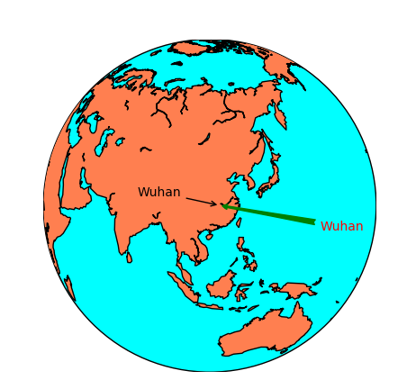
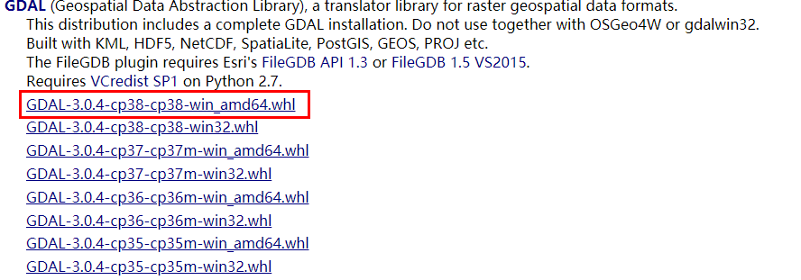

【译】Basemap手册 第二章 进阶（二）
绘制数据
添加注释
用带箭头的文本给地图上的点添加注释。用不带箭头的文本添加注释的方法，参见 text
annotate(*args, **kwargs)
- 这个方法不属于Basemap，而是属于matplotlib，所以只能和plot、axis一起使用。
- 第一个参数是文本的内容。
- xy是包含x、y轴坐标的列表，这个坐标点就是箭头指向的点。
- xycoords 指定xy使用的坐标类型：
- data表示坐标使用的data（投影坐标）
- offset points表示points的偏移量
- axes pixels 表示坐标左下角的像素点
- 其他参数参见annotation docs
- xytext 文本标签的位置，在箭头的起点
- textcoords 指定坐标类型，和xycoords一样
- arrowprops 设置箭头属性，参见Line2D
- color 文本的颜色，参见This page explains all the color options
标记处武汉
from mpl_toolkits.basemap import Basemap
import matplotlib.pyplot as plt
map = Basemap(projection='ortho',
lat_0=30, lon_0=110)
map.drawmapboundary(fill_color='aqua')
map.fillcontinents(color='coral',lake_color='aqua')
map.drawcoastlines()
x, y = map(114, 30) # 经纬度坐标 东经114°，北纬30°
x2, y2 = (80, -20)
plt.annotate('Wuhan', xy=(x, y), xycoords='data',
xytext=(x2, y2), textcoords='offset points',
color='r',
arrowprops=dict(arrowstyle="fancy", color='g')
)
x2, y2 = map(80, 30)
plt.annotate('Wuhan', xy=(x, y), xycoords='data',
xytext=(x2, y2), textcoords='data',
arrowprops=dict(arrowstyle="->")
)
plt.show()
效果如下：

barbs
在地图上绘制风向
barbs(x, y, u, v, *args, **kwargs)
这个暂时不太常用，具体用法参见The barbs docs from the matplotlib documentation。
contour
绘制等高线
contour(x, y, data)
- x和y是矩阵数据
- data是包含点的坐标的矩阵
- 还可以传递第四个参数，这个参数的值是关于等高线等级的列表
- 默认的colormap是jet，但是可以修改为cmap
- tri=True可以假定栅格为非结构化的
示例代码
import matplotlib.pyplot as plt
from osgeo import gdal
from numpy import linspace
from numpy import meshgrid
map = Basemap(projection='tmerc',
lat_0=0, lon_0=3,
llcrnrlon=1.819757266426611,
llcrnrlat=41.583851612359275,
urcrnrlon=1.841589961763497,
urcrnrlat=41.598674173123)
ds = gdal.Open("dem.tiff")
data = ds.ReadAsArray()
x = linspace(0, map.urcrnrx, data.shape[1])
y = linspace(0, map.urcrnry, data.shape[0])
xx, yy = meshgrid(x, y)
map.contour(xx, yy, data)
plt.show()
如果运行不成功，可能出现的错误有两点：
- 没有gdal库 gdal库的下载方法同前面讲的，在这里找到

- 没有dem.tiff文件
可以在这里下载
contourf
绘制着色的等高线图
这些在上一张中也有介绍，详情可以参考文档contourf